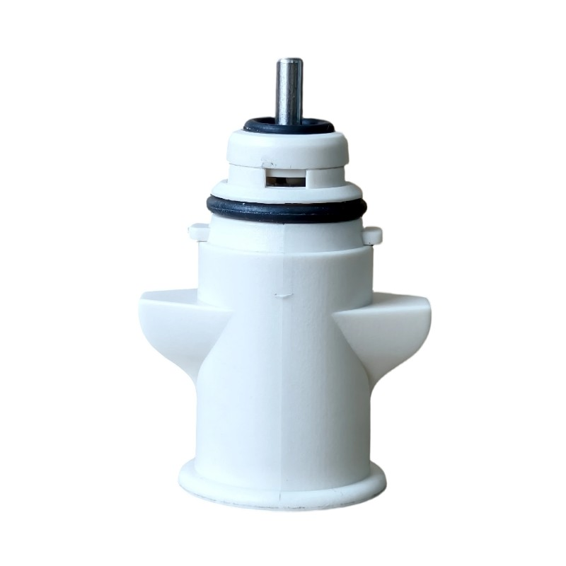
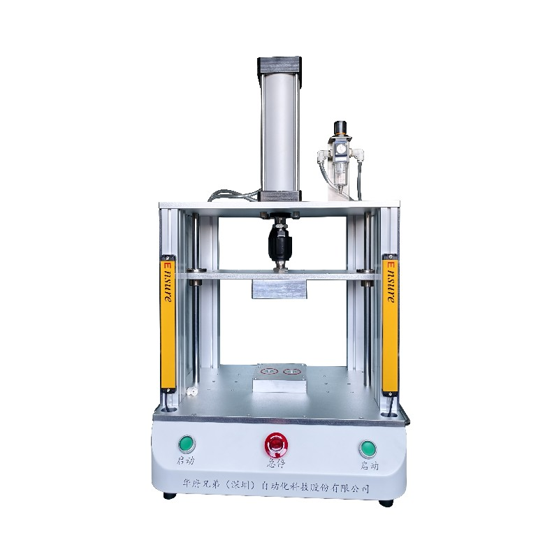

لا تستهين باختبار تسرب البخاخات الطبية؛ فقد يكون تهديدًا خفيًا لسلامة الرعاية الصحية!
في المجال الطبي، حتى أصغر مكون يمكن أن يكون مسألة حياة أو موت، وصمام الغاز الطبي هو أحد الأجزاء الأكثر أهمية. يؤثر أداء صمامات الغاز الطبية مباشرة على التشغيل الطبيعي للأجهزة الطبية، والاختبار المهني لهذه الصمامات هو مفتاح ضمان سلامة الرعاية الصحية. ومع ذلك، قد تجد صعوبة في تخيل أن تسربًا صغيرًا في صمام الغاز الطبي يمكن أن يؤدي إلى مأساة عائلية.
العام الماضي، والد السيد تشانغ، الذي كان بحاجة إلى دعم تنفسي طويل الأمد بسبب مرض القلب، تعرض لتسرب صغير للغاية في صمام غاز طبي حاسم على جهاز التنفس الخاص به. في البداية، لم تلاحظ العائلة أي شيء غير عادي، فقط لاحظت أن تنفس الكبار بدا أكثر إجهادًا من المعتاد ولكن لم يشك في الجهاز. مع مرور الوقت، على الرغم من أن التسرب لم يزداد سوءًا، انحرف تركيز الأكسجين المقدم من جهاز التنفس تدريجيًا عن المعيار. عانى جسد الكبار من نقص الأكسجين المطول، مما زاد الحمل القلبي وتسبب في النهاية بمضاعفات خطيرة. على الرغم من جهود الإنقاذ، توفي. لعلاج الكبار، استنفدت عائلة السيد تشانغ مدخرات سنوات وتراكمت عليها ديون ثقيلة. ما كانت عائلة سعيدة تحطمت فجأة، ووقعت في وضع مأساوي.
صمام خاص على جهاز التنفس الطبي
مثل هذه المآسي ليست حالات منعزلة. يسبب تسرب صمامات الغاز الطبية عواقب وخيمة لأنه يؤثر مباشرة على التشغيل الطبيعي للمعدات الطبية. وهذا يؤكد على أهمية اختبار الأجهزة الطبية السليم.
إذن كيف يمكن تجنب مثل هذه التسربات الصغيرة؟ الجواب يكمن في معدات الاختبار عالية الدقة. أجهزة اختبار التسرب وأجهزة اختبار الإحكام من Wafu Brothers هي "الأدوات الفعالة" لمعالجة التسربات الدقيقة.
تقدم أجهزة اختبار التسرب وأجهزة اختبار الإحكام من Wafu Brothers، كمعدات اختبار عالية الدقة، دقة تصل إلى واحد بالألف. هذا يعني أنه حتى أصغر التسربات يمكن اكتشافها بدقة في غضون ثوان. سواء كانت صمامات الغاز الطبية، أو أنبوب التسريب، أو مكونات الأجهزة الطبية الأخرى، أي مشكلة تسرب لا يمكن أن تهرب من "أعينها الحادة".

صمام غاز طبي مخصص

ملحق الصمام أحادي الاتجاه الطبي
تستخدم معدات الاختبار عالية الدقة من Wafu Brothers تقنيات اختبار متقدمة مثل كشف التدفق وتقنيات اختبار عالية الدقة أخرى مع خوارزميات ذكية لإكمال اختبار الأجهزة الطبية بسرعة ودقة. ليس فقط سهلة التشغيل، ولكنها أيضًا تتكيف مع بيئات ومتطلبات الاختبار المختلفة، providing ضمان اختبار موثوق لمصنعي الأجهزة الطبية ومؤسسات الرعاية الصحية. باستخدام معدات الاختبار من Wafu Brothers، يمكن منع الحوادث الطبية الناجمة عن التسربات الصغيرة effectively، ضمان سلامة المرضى وحماية سعادة الأسرة.
إذا كنت ترغب في معرفة المزيد عن أجهزة اختبار التسرب، أجهزة اختبار الإحكام، ومعدات الاختبار عالية الدقة الأخرى من Wafu Brothers، يرجى عدم التردد في الاتصال بنا في أي وقت.